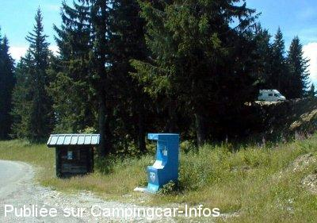

ASN = Aire de services avec stationnement nuit possible de :
LES SAISIES Col des Saisies
(N° 617)
Accès/adresse :
Aire N°2, Parking de la Forêt
Lieu-dit Col des Saisies
73270 VILLARD SUR DORON
Lieu-dit Col des Saisies
73270 VILLARD SUR DORON
Latitude : (Nord) 45.74633° Décimaux ou 45° 44′ 46′′
Longitude : (Est) 6.53441° Décimaux ou 6° 32′ 3′′
Tarif : 2015
Stationnement gratuit
Services : 3 €
Paiement avec pièces de 1 €
Type de borne : FLOT BLEU
Services :


Autres informations :
Ouvert toute l'année.
30 emplacements, en pente,
La borne est située en face du camping le Grand Tétras un peu plus bas
Tel : +33 (0) 479 389 517

Le 17/08/2003 par Franck Dichamp
Le 17/08/2003 par Franck Dichamp
de
balibalo
le 10/08/2015 :
je ne reviendrais plus sur le secteur , ne voulant plus dormir sur cette sois disant aire qui en realitée
presque un rebus sale et res en pente en effet j ai voulu aller un peu plus haut ou il il ya une sorte de )parking mais bien plat mais au bout d une heure un toc toc a la porte un elu de la commune de Villard sur doron me donne un papier ou les campings cars sont interdis de stationé sur la commune et qu il faut aller sois a ce disant parkng oul aire payant des saisies je sis retourner donc a ce parking gratuit mais en pleine nuit des tut tut d une voiture( aussi l année derniere) je pense a un local qui rentre du boulot et qui s amuse a reveiller les cc, bref nous reviendront plus jamais
je ne reviendrais plus sur le secteur , ne voulant plus dormir sur cette sois disant aire qui en realitée
presque un rebus sale et res en pente en effet j ai voulu aller un peu plus haut ou il il ya une sorte de )parking mais bien plat mais au bout d une heure un toc toc a la porte un elu de la commune de Villard sur doron me donne un papier ou les campings cars sont interdis de stationé sur la commune et qu il faut aller sois a ce disant parkng oul aire payant des saisies je sis retourner donc a ce parking gratuit mais en pleine nuit des tut tut d une voiture( aussi l année derniere) je pense a un local qui rentre du boulot et qui s amuse a reveiller les cc, bref nous reviendront plus jamais
de
Bibi41
le 06/03/2011 :
Nouveau tarif 2011 pour la borne est de 3 € (3 pieces d'un euro), un peu élévé pour vider sa cassette.
Aire très fréquentée malgré le passage de voitures et autres.... §
Nouveau tarif 2011 pour la borne est de 3 € (3 pieces d'un euro), un peu élévé pour vider sa cassette.
Aire très fréquentée malgré le passage de voitures et autres.... §
de
balibalo
le 05/08/2008 :
Sommes passés. Pas très bien mais plus calme que l'autre aire qui, elle, est payante!
Sommes passés. Pas très bien mais plus calme que l'autre aire qui, elle, est payante!